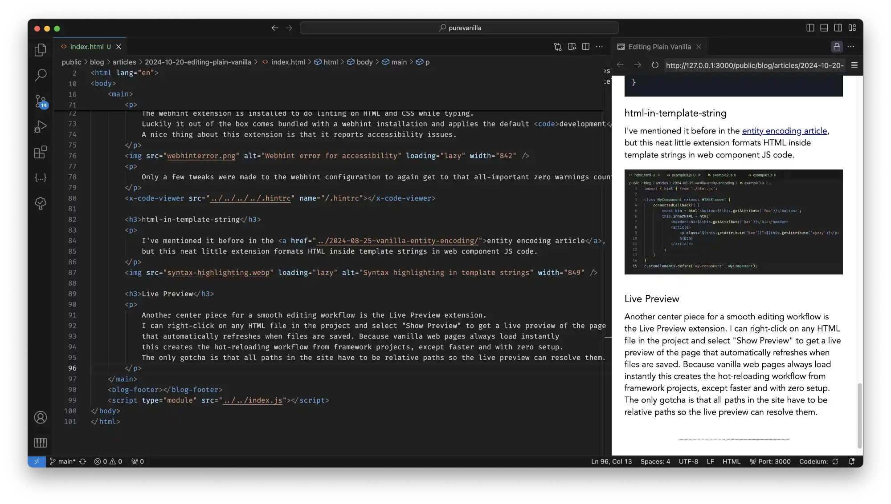
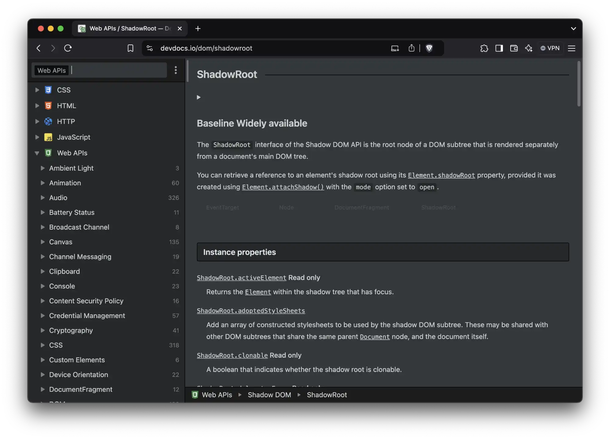

I'm typing this up in Visual Studio Code, after realizing I should probably explain how I use it to make this site. But the whole idea behind Plain Vanilla is no build, no framework, no tools. And VS Code is definitely a tool. So what gives?
There's a difference between tools that sit in between the code and a deployed site, and tools that only act in support of editing or deploying. The first category, like npm or typescript, impose continued maintenance on the project because they form a direct dependency. The second category, like VS Code or git, are easily replaced without impacting the project's ability to be edited. There's a tension between the ability to get things done faster, and the burden created by additional dependencies. For this project I draw the line in accepting the second category while rejecting the first.
Setting up a profile
I use VS Code for framework-based work projects as well as vanilla web development. To keep those two realms neatly separated I've set up a separate Vanilla profile. In that profile is a much leaner suite of extensions, configured for only vanilla web development.
- ESLint, to automatically lint the JS code while editing
- webhint, to lint the HTML and CSS code, and detect accessibility issues
- html-in-template-string, to syntax highlight HTML template strings
- Todo Tree, to keep track of TODO's while doing larger changes
- Live Preview, to get a live preview of the page that I'm working on
- VS Code Counter, for quick comparative line counts when porting framework code to vanilla
- Intellicode, for simple code completion
- Codeium, for AI-assisted code completion, works great for web component boilerplate
Modern web development can be very overburdened by tools, sometimes all but requiring the latest Macbook Pro with decadent amounts of RAM just to edit a basic project. The combination of a no build plain vanilla codebase with a lean VS Code profile guarantees quick editing, even on my oldest and slowest laptops.
Linting
Nobody's perfect, myself included, so something needs to be scanning the code for goofs. The first linting tool that's set up is ESLint. The VS Code extension regrettably does not come bundled with an eslint installation, so this has to be installed explicitly. By doing it once globally this can be reused across vanilla web projects.
npm install -g eslint @eslint/js globals
Because I use nvm to manage node versions the global eslint install was not automatically detectable.
This required setting a NODE_PATH in .zshrc that VS Code then picked up.
export NODE_PATH=$(npm root -g)
In addition, in order to lint successfully it needs a configuration file, located in the project's root.
Setting the ecmaVersion to 2022 ensures that I don't accidentally use newer and unsupported Javascript features,
like in this example trying to use ES2024's v flag in regular expressions.
This version could be set to whatever browser compatibility a project requires.
The ignores blocks excludes external libraries to placate my OCD that wants to see zero errors or warnings reported by eslint project-wide.
The article folders are excluded for a similar reason, because they contain a lot of incomplete and deliberately invalid example JS files.
The webhint extension is installed to do automatic linting on HTML and CSS.
Luckily it out of the box comes bundled with a webhint installation and applies the default development ruleset.
A nice thing about this extension is that it reports accessibility issues.
Only a few tweaks were made to the webhint configuration to again get to that all-important zero warnings count.
html-in-template-string
I've mentioned it before in the entity encoding article, but this neat little extension formats HTML inside tagged template strings in web component JS code.

Live Preview
The center piece for a smooth editing workflow is the Live Preview extension. I can right-click on any HTML file in the project and select "Show Preview" to get a live preview of the page. This preview automatically refreshes when files are saved. Because vanilla web pages always load instantly this provides the hot-reloading workflow from framework projects, except even faster and with zero setup. The only gotcha is that all paths in the site have to be relative paths so the previewed page can resolve them.
The preview's URL can be pasted into a "real browser" to debug tricky javascript issues and do compatibility testing. Very occasionally I'll need to spin up a "real server", but most of the code in my vanilla projects is written with only a Live Preview tab open.
Previewing is also how I get a realtime view of unit tests while working on components or infrastructure code, by opening the tests web page and selecting the right test suite to hot reload while editing.
Bonus: working offline
Because I live at the beach and work in the big city I regularly need to take long train rides with spotty internet connection. Like many developers I cannot keep web API's in my head and have to look them up regularly while coding. To have a complete offline vanilla web development setup with me at all times I use devdocs.io. All my projects folders are set up to sync automatically with Syncthing, so whatever I was doing on the desktop can usually be smoothly continued offline on the laptop without having to do any prep work to make that possible.
There, that's my lean vanilla web development setup. What should I add to this, or do differently? Feel free to let me know.